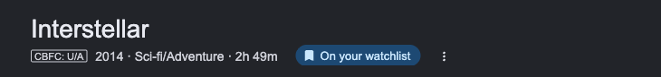
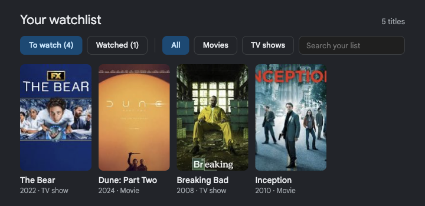
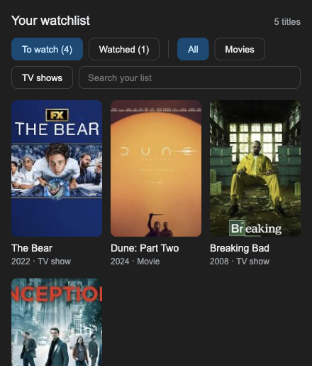
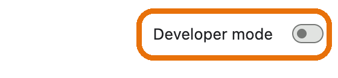
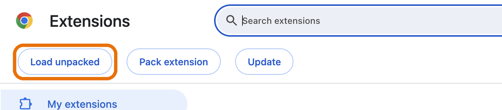
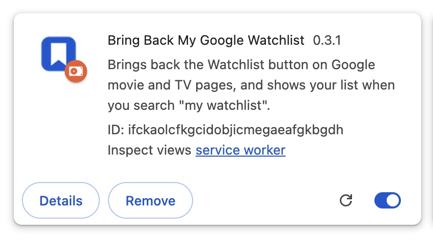
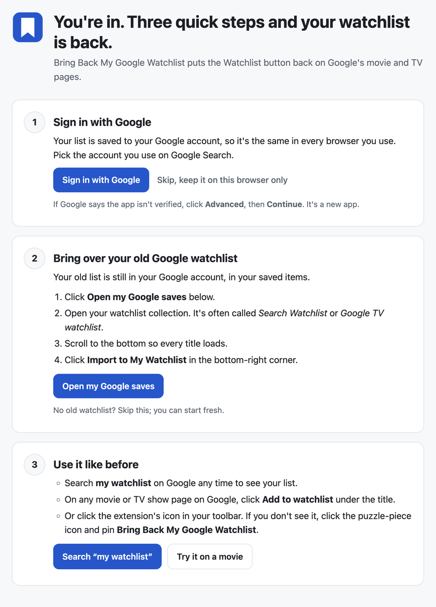

Google's Watchlist button keeps disappearing. This brings it back.
A free browser extension. Search any movie or show on Google and press Add to watchlist. Search my watchlist and your list is right there, just like before.
Computer only (Chrome, Brave, Edge) · Free and open source ·



What it does
Save from Google
An “Add to watchlist” button on every movie and TV page in Google Search, with the poster saved too.
Search “my watchlist”
Your list shows at the top of the results, with To watch / Watched, Movies / TV filters and search. “my watchlist movies” works too.
Same list everywhere
Sign in with Google once per browser and your list syncs between Chrome, Brave, Edge and your other computers.
Install (about 2 minutes)
Computer only for now. It works in Chrome, Brave and Edge on a Mac, Windows or Linux computer. Phones and tablets can't run it yet. If you're on your phone, send yourself this link and open it on your computer.
The extension isn't in the Chrome Web Store yet, so it's installed by hand. It's a one-time setup and nothing technical is needed.
-
Download bring-back-my-google-watchlist.zip and unzip it.
On a Mac, double-click it. On Windows, right-click it and choose Extract All. You get a folder called
bring-back-my-google-watchlist. - Move that folder somewhere permanent, like your Documents folder. The browser runs the extension from it, so don't delete it later.
- Open the extensions page. Type
chrome://extensionsin the address bar and press Enter. (Brave:brave://extensions, Edge:edge://extensions.) -
Turn on Developer mode with the switch in the top-right corner. (In Edge it's in the left-hand menu.)

-
Click “Load unpacked”. It appears at the top left once Developer mode is on.

- Choose the folder. In the window that opens, find the
bring-back-my-google-watchlistfolder from step 2, click it once, then click Select (on Windows: Select Folder). Pick the folder itself; you don't need to open it. -
Done. The extension appears on the page, and a welcome page opens to walk you through the rest.

Chrome may show a “Disable developer mode extensions” message when it starts. That's normal for extensions installed by hand. Just close it, and don't choose Disable.
First-time setup
Right after installing, a welcome page opens with three steps. Each one ticks itself off when it's done.
- Sign in with Google. Your list is then saved to your account and stays the same in every browser you use. If Google says the app isn't verified, click Advanced, then Continue. You can also skip this and keep the list on one browser.
- Bring over your old Google watchlist. Click Open my Google saves, open your watchlist collection (often Search Watchlist or Google TV watchlist), scroll to the bottom, and click Import to My Watchlist in the bottom-right corner. Posters and years for imported titles fill in by themselves over the next few minutes.
- Use it like before. Search my watchlist on Google any time, or click Add to watchlist under the title of any movie or show. You can also open the list from the extension's icon in the toolbar. If you don't see the icon, click the puzzle-piece icon and pin it.

Closed the welcome page? Click the extension's icon, then Getting started.
Updating
When a new version is out, the extension's toolbar window tells you. Download the new zip, replace the old bring-back-my-google-watchlist folder with the new one, then click the reload arrow (↻) on the extension's card in the extensions page. Your list stays.
Questions
Is this made by Google?
No. It's an independent, free project that works on Google Search pages. It isn't affiliated with or endorsed by Google.
Does it change my watchlist in my Google account?
No. Importing copies your old Google watchlist once; after that, the extension keeps its own list. Your Google watchlist stays untouched, as a backup.
What do you store about me?
Nothing, unless you sign in to sync. If you do, the sync server stores your Google account's email and ID and your list. Nothing is sold or shared, and you can delete it all from the toolbar window. The privacy policy has the details.
Does it work on my phone?
Not yet. Phone browsers like Chrome on Android and iPhone don't run extensions. A phone version is planned.
Signing in says “Access blocked” or “This app isn't verified”
The sign-in app is new. If you see “isn't verified”, choose Continue. If it says “Access blocked”, sign-in isn't open to everyone yet. Everything else works without signing in.
Something's broken or I have an idea
Open an issue on GitHub, or email kaizar.raja@gmail.com.